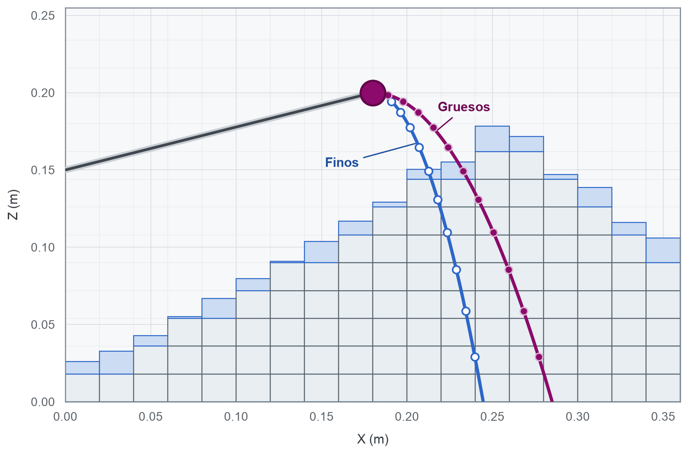

3. Formación de la pila y flujo superficial
Cómo agregar material, mezclar propiedades y relajar pendientes sin violar conservación.
Mecanismo de transferencia de masa
Si bien el autómata no calcula la trayectoria de cada partícula, sí representa el efecto neto de la deposición y el flujo superficial. La alimentación agrega material a la parte superior de una columna; el flujo superficial transfiere material entre columnas vecinas cuando la diferencia de altura excede un umbral. La descarga retira material desde la base del stockpile.
Las reglas locales de transferencia de masa se aplican a cada celda de la retícula, permitiendo que la forma final del stockpile simplemente emerja de la interacción de muchas celdas. La conservación de volumen y propiedades se verifica en cada paso, asegurando que el autómata respete los principios físicos fundamentales.
Alimentación de una columna
Consideremos una retícula de celdas cúbicas de aristas \(\triangle x\), \(\triangle y\) y \(\triangle z\). Cada celda puede contener un volumen máximo \(V_c=\triangle x\triangle y\triangle z\). En cada paso de tiempo \(\triangle t\), una celda puede recibir un volumen \(\triangle V_{\mathrm{in}}\) y transferir un volumen \(\triangle V_{\mathrm{out}}\) a sus vecinas. Su fracción de llenado se describe como
\[ \triangle F_{\mathrm{in}}=\frac{q_{\mathrm{in}}\triangle t}{\rho_b V_c} \]
donde \(q_{\mathrm{in}}\) es el flujo volumétrico de entrada y \(\rho_b\) la densidad aparente del material. La fracción de llenado se mantiene entre \(0\) y \(1\). Una celda llena no puede recibir más material; una celda vacía no puede transferirlo.
En el núcleo del proyecto, definimos la función add_to_top(), que permite buscar la primera celda con capacidad libre desde la base de la columna y agregar allí el material entrante. Si la celda superior está parcialmente llena, mezcla el nuevo material con el existente; si se completa, continúa en la siguiente celda. Un único incremento puede llenar varias celdas, por lo que el algoritmo mantiene un remanente hasta consumirlo.
Para toda propiedad extensiva, como el tamaño característico, la mezcla local se calcula como:
\[ d_{\mathrm{mix}}=\frac{V_{\mathrm{old}}d_{\mathrm{old}}+V_{\mathrm{new}}d_{\mathrm{new}}}{V_{\mathrm{old}}+V_{\mathrm{new}}} \]
donde \(V\) es el volumen de material y \(d\) la propiedad a mezclar. Esta expresión supone que \(d\) se puede promediar linealmente. Para una distribución granulométrica completa sería preferible transportar fracciones por clase o una representación paramétrica de la curva. El \(P_{80}\) es una compresión útil, pero dos distribuciones granulométricas con el mismo \(P_{80}\) no son idénticas.
Trayectoria del flujo de alimentación
Cuando una correa transportadora descarga mineral desde un punto fijo \((x_{i},z_{i})\) con un ángulo de caída \(\beta\) y velocidad \(v\), la trayectoria balística ideal del material es
\[ z=z_{i}+\left( x-x_{i} \right) \tan \left( \beta \right) -\frac{g}{2v^{2}\cos^{2} \left( \beta \right)} \left( x-x_{i} \right)^{2} \]
Naturalmente, la intersección de la trayectoria descrita por la ecuación anterior con la superficie del stockpile determina la celda de impacto. En la réplica pública del proyecto, el punto de alimentación se fija en el centro de la pila para simplificar la explicación del autómata sin necesidad de publicar geometría detallada. Sin embargo, en un núcleo industrial más avanzado, es posible calcular la trayectoria en cada paso y dividir las corrientes fina y gruesa antes de que el material toque la pila.
La distancia cubierta por la trayectoria debe compararse con el tamaño de la celda. Si la trayectoria cambia menos de una celda para todo el rango de tamaños del stockpile, activar la segregación por trayectoria introduce un parámetro adicional sin ecuaciones espaciales suficientes para despejar su valor. La ausencia de un efecto visible no demuestra que el mecanismo no exista; puede indicar que la discretización no es lo suficientemente fina para capturarlo.
Ángulo de reposo del mineral
Consideremos dos columnas de mineral en el stockpile, una más alta que la otra. Sea \(h_{+}\) la altura de la columna más alta y \(h_{-}\) la altura de la columna más baja. Si designamos por \(\alpha\) al ángulo de reposo del mineral, la diferencia de altura admisible entre las dos columnas en la dirección cardinal es \(T=\tan\alpha\). Si la diferencia de altura entre las dos columnas excede este umbral, es decir, si \(\triangle h = h_{+}-h_{-}>T\), entonces se produce un flujo superficial de material desde la columna más alta hacia la más baja. El volumen de altura que se transfiere para igualar ambas columnas alrededor del umbral se calcula como
\[ f=\frac{\triangle h - T}{2} \]
El divisor igual a \(2\) se debe a que una columna baja \(f\) y la otra sube \(f\), reduciendo así la diferencia en \(2f\). Para una dirección diagonal, el umbral se reemplaza por \(\sqrt{2}\tan\alpha\), conforme la fórmula de la diagonal de un cuadrado de lado unitario.
Esta regla es de naturaleza cinemática. No permite calcular la aceleración ni la duración del desprendimiento de mineral que rueda por la superficie del stockpile. En cambio, mueve el volumen de material que restablece inmediatamente la diferencia de altura a su valor umbral. El tiempo físico entra en juego únicamente a través de la alimentación y la descarga, no mediante la propagación explícita de ondas sobre la superficie del stockpile.
Esquemas de flujo superficial
En la parte II del trabajo de Ye, Hilden y Yahyaei (2023), se comparan dos esquemas de flujo superficial del mineral en el stockpile: Uno que visita las celdas vecinas en orden aleatorio y otro que selecciona primero la celda vecina con mayor exceso de altura. El segundo esquema converge más rápido porque ataca la pendiente más inestable, pero cada comparación cuesta más. La referencia encuentra diferencias pequeñas para sus experimentos y selecciona el algoritmo de mayor diferencia por velocidad. Nuestra versión pedagógica aleatoriza vecinas y mueve un solo flujo por columna y paso, una elección simple para exponer el mecanismo de transferencia de masa en cada celda sin introducir complejidad adicional.
En Python, este mecanismo se implementa de manera compacta como:
# Definimos el exceso de altura entre la celda fuente y la celda destino,
# restando el umbral.
excess = source_height - target_height - threshold
# Definimos el flujo a transferir como la mitad del exceso, limitado por
# un flujo máximo local.
if excess > 0:
flow = min(excess / 2.0, maximum_local_flow)En el bloque de código anterior, la variable maximum_local_flow actúa como una especie de umbral numérico. Sin esta limitación, una entrada grande podría trasladar muchas celdas en una sola interacción y atravesar el detalle que pretendíamos modelar. La alternativa más física sería subdividir el paso en microinteracciones hasta agotar el volumen disponible.
Remoción de material
El movimiento de material superficial no es simétrico. La alimentación agrega material desde arriba, mientras que la descarga lo retira desde abajo. Por lo tanto, el flujo superficial debe extraer material desde la superficie de la celda más alta y depositarlo en la celda vecina más baja. Esta distinción es crucial para mantener la estratificación y la edad del material en el stockpile.
La implementación del autómata en Python, en este proyecto, distingue ambos casos mediante las funciones remove_from_top() y remove_from_bottom(). La primera se utiliza para el flujo superficial, mientras que la segunda se emplea en la descarga. Ambas funciones aseguran la conservación del volumen, pero generan edades y estructuras internas completamente distintas.
El proyecto contempla, por supuesto, ambos mecanismos sobre la base de una separación de responsabilidades a nivel programático. De esta manera, cada remoción de material es acotada a una fracción de la celda respectiva, evitando que un desprendimiento de material hacia abajo (o avalancha) afecte la estratificación de la celda superior. En un núcleo industrial más avanzado, se podrían implementar pruebas adicionales sobre la migración del material y optimizaciones para mejorar el rendimiento del autómata.
WarningUna regla correcta en la frontera equivocada sigue siendo incorrecta
Extraer el volumen correcto desde el fondo durante un desprendimiento de material cierra el balance de masa, pero destruye el mecanismo de estratificación. Este es un caso típico en el cual las propiedades extensivas que se establecen como invariantes globales no son suficientes para justificar la decisión de cómo representar un sistema, ya que también necesitamos invariantes topológicos. Por ejemplo: “El flujo superficial sólo modifica celdas conectadas a la superficie”.
Conservación de volumen y propiedades
Para toda celda \((i,j,k)\), cada interacción de alimentación, flujo superficial o descarga debe cumplir la conservación de volumen y propiedades. Esto significa que el volumen total de material y cualquier propiedad extensiva (como tamaño característico) deben permanecer constantes antes y después de la interacción, a menos que se especifique lo contrario mediante reglas explícitas de segregación.
Esta expecie de axioma asegura que el autómata respete los principios físicos fundamentales y evita errores sutiles que podrían surgir de la implementación del código. Por ejemplo, si una celda recibe material sin ajustar correctamente su propiedad extensiva, podría alterar la distribución de tamaños en el stockpile, lo que afectaría la dinámica del flujo superficial y la forma final de la pila.
Matemáticamente, para cada interacción sin entrada ni salida externas debe cumplirse:
\[ \sum_{i=1}^{n_{x}} \sum_{j=1}^{n_{y}} \sum_{k=1}^{n_{z}} f_{ijk}^{\mathrm{antes}}=\sum_{i=1}^{n_{x}} \sum_{j=1}^{n_{y}} \sum_{k=1}^{n_{z}} f_{ijk}^{\mathrm{despues}} \]
De esta manera, si transportamos una propiedad extensiva \(d\), el “momento” de esa propiedad también debe cerrarse:
\[ \sum_{i=1}^{n_{x}} \sum_{j=1}^{n_{y}} \sum_{k=1}^{n_{z}} f_{ijk}^{\mathrm{antes}}d_{ijk}^{\mathrm{antes}}=\sum_{i=1}^{n_{x}} \sum_{j=1}^{n_{y}} \sum_{k=1}^{n_{z}} f_{ijk}^{\mathrm{despues}}d_{ijk}^{\mathrm{despues}} \]
donde, por “momento”, nos referimos a la suma ponderada de la propiedad extensiva por el volumen de material en cada celda. Esta conservación es crucial para garantizar que las interacciones locales no introduzcan errores acumulativos que podrían afectar la forma y distribución del stockpile a largo plazo. Sin embargo, esta regla será válida siempre que no haya reglas de segregación explícitas que dividan el flujo conservando su media ponderada. En tales casos, la conservación del momento de propiedad puede no cumplirse estrictamente, pero se mantendrá la media ponderada de la propiedad extensiva.
Forma emergente y error de retícula
Una vez que se alimenta continuamente una celda central, el stockpile crece hasta que su pendiente en todas direcciones alcanza el ángulo de reposo \(\alpha\). A escala macroscópica, la altura ideal de un cono formado por el material es
\[ h(r)=\max(0,h_{0} - r \tan (\alpha)) \]
Si la retícula utilizada está constituida por celdas en una vecindad de Moore, la distancia \(r\) no se resuelve como una distancia euclidiana continua, sino que adopta una forma discreta con ocho caras (denominada distancia de Chebyshev o norma \(\infty\)). Este error geométrico limita la capacidad de refinar indefinidamente la celda: Aumentar la resolución puede producir una pirámide más suave, pero no cambiará su simetría.
La evaluación de la convergencia del modelo requiere comparar magnitudes integrales y funcionales, tales como:
- Volumen total a una altura dada.
- Radio equivalente por área ocupada.
- Distribución radial del tamaño.
- Descarga por línea.
- Tiempo de residencia de la carga viva del stockpile.
La comparación punto a punto entre celdas y subespacios de diferentes resoluciones no es adecuada, ya que las retículas representan soportes distintos y no se puede garantizar que las celdas se correspondan exactamente entre sí.
Inicialización de la retícula
En operaciones industriales, un stockpile de mineral intermedio no comienza vacío. Antes de su uso, se alimenta con un volumen inicial de material que forma una pila cónica, permitiendo la generación de carga viva que será la que, eventualmente, alimentará a las líneas de molienda posteriores. Metodológicamente, esto implica que todo modelo de simulación debe comenzar con un estado inicial que represente un stockpile ya formado, evitando así la necesidad de simular un largo período de formación antes de que la descarga sea posible. Por lo tanto, se hace necesario declarar una ventana de calentamiento en la simulación, durante la cual se simulan pasos previos que no se publican hasta que la carga viva del material inicial deja de dominar la zona activa del stockpile. Naturalmente, el número de días de esta ventana de calentamiento dependerá del inventario accesible y del tonelaje de renovación del stockpile.
En este proyecto, la función seed_conical_pile() crea un estado inicial determinista para que la recreación de la carga viva mínima sea corta. Sin embargo, en una reproducción empírica, esa comodidad debe acompañarse de un análisis de sensibilidad al estado inicial, asegurando que los resultados obtenidos no dependan críticamente de la configuración inicial del stockpile.
Pruebas mínimas de esta etapa
Debido a que el proyecto contempla la simulación de un sistema físico, es fundamental establecer pruebas que verifiquen la correcta implementación de las reglas de transferencia de masa y la conservación de propiedades. Estas pruebas mínimas aseguran que el autómata se comporta de manera coherente con los principios físicos que pretende modelar. Éstas incluyen:
- La agregación de un número \(n\) de celdas debe incrementar el llenado total exactamente en \(n\) unidades de volumen.
- Una mezcla de tamaños de partículas debe conservar su media ponderada, garantizando que la propiedad extensiva del tamaño característico se mantenga consistente antes y después de la mezcla.
- Una columna que se llena hasta el techo del stockpile debe lanzar un error y no escribir fuera del arreglo, evitando así la corrupción de datos y asegurando la integridad del modelo.
- Una superficie que se encuentra por debajo del umbral de diferencia de altura no debe experimentar cambios, manteniendo la estabilidad de la superficie granular que representa al stockpile.
- Una superficie que se encuentra por encima del umbral debe reducir su pendiente, reflejando el flujo superficial de material hacia las columnas vecinas.
- El flujo cardinal y diagonal debe respetar umbrales distintos, asegurando que la transferencia de masa se realice de manera coherente con la geometría de la retícula y las reglas de transferencia establecidas.
- Cambiar la semilla del generador de números aleatorios debe cambiar el microestado del sistema, pero no debe afectar el balance global de masa y propiedades, garantizando que la simulación sea reproducible y consistente bajo diferentes condiciones iniciales.
Esta suite de pruebas mínimas se ejecuta por medio de la librería PyTest y mantiene el estado del sistema en Numpy. Es importante destacar que el orquestador de la simulación no participa en estas pruebas, ya que se enfocan en propiedades fundamentales del dominio físico que el autómata representa, no en la lógica de control de la simulación.
¿Qué vemos cuando cae material en las laderas de un stockpile?
La depositación de material granular sobre un stockpile no es un proceso uniforme ni determinista. La forma final del stockpile es el resultado de múltiples interacciones locales entre partículas, que incluyen rodadura, saltos y avalanchas. La simulación mediante un autómata celular permite capturar estas interacciones de manera simplificada, enfocándose en la transferencia de masa y la conservación de propiedades a nivel macroscópico.
De la misma forma, una correa transportadora que despisuta mineral sobre un stockpile no genera un cono perfecto, sino que entrega partículas con velocidades y posiciones de impacto variadas. La forma cónica que se observa es un resultado agregado de estos eventos individuales, y no una geometría impuesta por la alimentación del material.
La “compresión” de esta fenomenología por parte del autómata permite representar el efecto neto de la deposición y el flujo superficial sin necesidad de calcular choques individuales o rotación de partículas. En cambio, se utiliza un modelo simplificado que deposita material en una columna y transfiere hacia vecinos cuando la diferencia de altura excede un umbral, lo que es válido únicamente si la pregunta se refiere a la forma y distribución espacial a una escala mucho mayor que una partícula individual.
Ángulo de reposo estático y dinámico
En mecánica de rocas, el ángulo de reposo de un mineral corresponde a la inclinación característica de una superficie granular estable constituida por ese mineral. Este ángulo no es una constante perfecta y puede depender de varios factores, como la humedad, la forma y rugosidad de las partículas, la distribución de tamaños, la velocidad de alimentación y si la superficie está comenzando a moverse o ya está fluyendo.
Por esta razón, es muy importante distinguir entre el ángulo estático y el ángulo dinámico:
- El ángulo de reposo estático es la inclinación a partir de la cual una superficie inicialmente estable comienza a fallar y a moverse.
- El ángulo de reposo dinámico es la inclinación que mantiene una superficie durante el flujo, es decir, cuando el material ya está en movimiento.
Por supuesto, el ángulo de reposo que se utiliza en el modelo del autómata celular es un parámetro del modelo, que actúa como un umbral efectivo que resume ambos fenómenos a la resolución elegida. Usar un único valor para el ángulo de reposo constituye una hipótesis de cierre, ya que no estamos declarando que todas las partículas compartan el mismo ángulo microscópico. En cambio, estamos eligiendo un umbral macroscópico que el autómata puede identificar con los datos disponibles.
En palabras sencillas, el ángulo de reposo es una propiedad emergente del sistema granular que depende de múltiples factores y que se utiliza como un parámetro de control en el modelo del autómata celular para simular el comportamiento del flujo superficial y la formación del stockpile.
¿Cómo se deriva la regla de transferencia de masa?
Consideremos dos columnas vecinas de un stockpile, una más alta que la otra. Sea \(h_s\) la altura de la columna fuente (la más alta) y \(h_t\) la altura de la columna destino (la más baja). Queremos transferir material desde la columna fuente a la columna destino hasta que la diferencia de altura entre ambas sea igual al umbral \(T\), que corresponde al ángulo de reposo del mineral. Si deseamos mover un volumen equivalente a \(q\) unidades de altura desde la fuente al destino, después del movimiento las nuevas alturas serán:
\[ h_{s}^{\prime}=h_{s}-q\quad \wedge \quad h_{t}^{\prime}=h_{t}+q \]
Para que la nueva diferencia de altura sea exactamente \(T\), debe cumplirse que
\[ h_{s} -q -(h_{t}+q)=T \]
De esta manera, despejando \(q\), obtenemos
\[ q=\frac{h_s-h_t-T}{2} \]
El uso del \(2\) en el denominador asegura que la diferencia de altura se reduzca a la mitad del exceso, permitiendo que ambas columnas se acerquen al umbral sin invertir la pendiente. Esto evita oscilaciones y garantiza una transición suave hacia el equilibrio. Además, en este proyecto, se limita el valor de \(q\) para que una única interacción no desplace demasiado material, lo que ayuda a mantener la estabilidad del sistema y a evitar cambios abruptos en la topografía del stockpile.
NoteUn ejemplo rápido
Sea \(h_s=5.2\), \(h_t=3.0\) y \(T=0.8\). La diferencia de altura es \(5.2 - 3.0 = 2.2\), que excede el umbral \(T=0.8\). Por lo tanto, el exceso es \(2.2 - 0.8 = 1.4\). Aplicando la regla de transferencia, calculamos:
\[ q = \frac{1.4}{2} = 0.7 \]
De esta manera, después de transferir \(q=0.7\) unidades de altura, las nuevas alturas serán:
\[ h_s' = 5.2 - 0.7 = 4.5 \quad \text{y} \quad h_t' = 3.0 + 0.7 = 3.7 \]
Esto da como resultado una nueva diferencia de altura de \(4.5 - 3.7 = 0.8\), que es exactamente el umbral \(T\). El total de altura sigue siendo \(4.5 + 3.7 = 8.2\), lo que confirma la conservación del volumen. La replicación de este cálculo en el código asegura que la transferencia de masa se realice de manera consistente y que el sistema evolucione hacia un estado estable sin violar la conservación de volumen ni las propiedades extensivas del material.
Mezcla de propiedades durante el flujo superficial
Consideremos una celda con una fracción de llenado \(f=0.6\) y un \(P_{80}\) de 3 pulgadas. Esta celda transfiere material a una celda vecina que tiene una fracción de llenado \(f=0.2\) y un \(P_{80}\) de 6 pulgadas. La propiedad mezclada por volumen se calcula como:
\[ d^{\prime}=\frac{0.6\times 3+0.2\times 6}{0.6+0.2} =3.75\text{ pulgadas} \]
Notemos que la media aritmética simple, \((3+6)/2=4.5\), sería incorrecta como medida de mezcla, ya que trataría ambos volúmenes como iguales. La función de uso interno _mix() conserva el momento de la propiedad \(d\), correspondiente a la multiplicación \(fd\), antes y después de la transferencia, asegurando que la mezcla refleje correctamente la contribución de cada celda según su fracción de llenado.
En el siguiente bloque de código, se muestra cómo se implementa la mezcla de propiedades durante el flujo superficial en Python:
def _mix(
existing_size: float,
existing_volume: float,
new_size: float,
new_volume: float,
) -> float:
# Definimos el volumen total después de la mezcla.
total = existing_volume + new_volume
# Y retornamos la propiedad mezclada, conservando el momento de
# propiedad antes y después de la transferencia.
return (
new_size
if total <= 0
else (
existing_size * existing_volume + new_size * new_volume
) / total
)La conservación del momento de propiedad es una aproximación útil, pero no es perfecta. Un \(P_{80}\) no es una propiedad aditiva tan completa como la masa de una especie química; es un resumen de una distribución granulométrica. La mezcla ponderada sirve como un estado comprimido, pero no puede reconstruir una distribución granulométrica arbitraria. En el siguiente módulo se desarrollará esa limitación y se explorarán métodos más avanzados para representar la mezcla de distribuciones granulométricas completas.
La diferencia entre alimentar, deslizar y descargar
En este modelo, las operaciones de alimentación, flujo superficial y descarga son distintas y no deben confundirse. Cada una tiene un propósito específico y afecta la ocupación de las celdas de manera diferente:
| Operación | Desde dónde retira | Dónde agrega | Fenómeno representado |
|---|---|---|---|
| Alimentación. | Exterior del sistema. | Parte superior. | Entrada de masa. |
| Flujo superficial. | Superficie de una columna. | Superficie vecina. | Avalancha o rodadura. |
| Descarga. | Base o zona de recuperación. | Exterior del sistema. | Salida de masa y migración de vacío. |
Por ejemplo, si usamos la función remove_from_bottom() para simular un flujo superficial, aunque el balance global de masa se mantenga, se alteraría la edad y composición internas del stockpile, lo que constituye un error físico significativo que no sería detectado por una simple prueba de conservación de masa.
En el bloque de código siguiente se muestra la estructura de la función remove_from_bottom():
def remove_from_bottom(
state: StockpileState,
north: int,
east: int,
volume_cells: float,
) -> tuple[float, float]:
"""Extrae desde el punto de descarga y migra el vacío hacia arriba."""
remaining = volume_cells
removed = 0.0
size_moment = 0.0
for level in range(state.fill.shape[0]):
available = state.fill[level, north, east]
if available <= 0:
continue
moved = min(available, remaining)
removed += moved
size_moment += moved * state.p80_in[level, north, east]
state.fill[level, north, east] -= moved
remaining -= moved
if remaining <= 1e-12:
break
# Compactar la columna es la versión determinista de migración vertical. El
# modelo completo elige vecinos superiores con una probabilidad espacial.
occupied = state.fill[:, north, east] > 0
fills = state.fill[occupied, north, east].copy()
sizes = state.p80_in[occupied, north, east].copy()
state.fill[:, north, east] = 0.0
state.p80_in[:, north, east] = 0.0
state.fill[: len(fills), north, east] = fills
state.p80_in[: len(sizes), north, east] = sizes
return removed, size_moment / removed if removed > 0 else float("nan")Comentarios finales
Si el stockpile estuviera representado por medio de una superficie perfectamente plana, no habría flujo superficial y la forma permanecería inalterada. Sin embargo, en la práctica, las irregularidades locales y las diferencias de altura entre columnas vecinas generan un flujo superficial que redistribuye el material hasta alcanzar un estado de equilibrio caracterizado por el ángulo de reposo del mineral.
Por otra parte, un stockpile que se alimenta continuamente desde un punto fijo y que no tiene descarga eventualmente alcanzará un estado estacionario en el que la forma del stockpile se estabiliza y la pendiente de las laderas se mantiene constante. En este estado, el flujo superficial actúa para mantener la diferencia de altura entre columnas vecinas dentro del umbral definido por el ángulo de reposo. Por el contrario, si el stockpile se descarga sin alimentación, la forma del stockpile se reducirá gradualmente hasta que se agote el material disponible, generándose un rathole gigante con la forma aproximada de un cono invertido.
Estas observaciones resaltan la importancia de comprender cómo las reglas locales de transferencia de masa y las propiedades del material interactúan para determinar la forma final del stockpile y su comportamiento dinámico.
← Fundamentos del autómata · Siguiente: Segregación granulométrica →